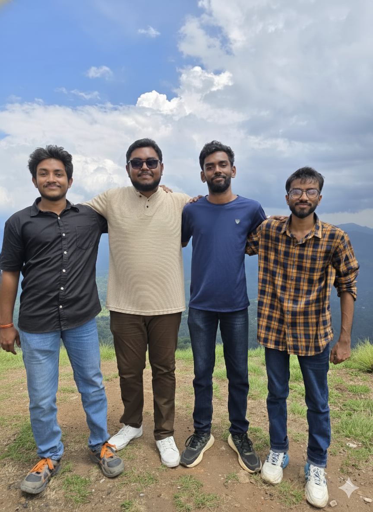
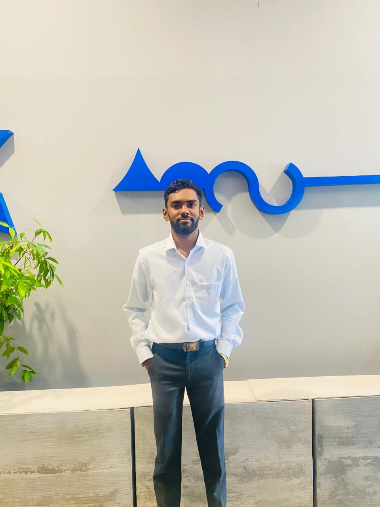

We are **Four Undergraduate Engineers** from University of Moratuwa, dedicated to driving innovation in Apparel Manufacturing and Sustainable Textile Technology.
4
Dedicated Members
10+
Group Projects
30+
Individual Portfolios
UoM T&A
Affiliation
Our Team, In Focus

Ensure 'group_photo.jpg' is uploaded directly to the root of your repository (next to index.html).
Our Collective Vision
The Department of Textile & Apparel Engineering at the University of Moratuwa has equipped us with a robust foundation in both the technical and managerial aspects of the industry. As a team, we combine expertise from fiber science to production systems, allowing us to approach complex challenges with a holistic, engineering mindset.
Our Team Members

Dimalka Hettiarachchi
Index: 241083D
Technical Textiles & R&D
IT Specialist, Graphic Designer, Video Editor, Web Development, UI/UX Design, Social Media Management.
**Key Skills:** Web Development, UI/UX Design, Graphic Design, Video Editing, Social Media Management.
Solo Project: Non-Woven Air Filtration Media
Developed a prototype non-woven fabric from recycled PET fibers, achieving a 95% filtration efficiency for 2.5µm particles (PFE rating) in a controlled lab environment. This included optimizing the carding and needle-punching parameters.
**Key Skills:** Project Management, Process Optimization, Time Management, Quantitative Analysis.
Solo Project: Line Balancing and Efficiency Improvement
Conducted a detailed line balancing exercise for a jacket production cell, achieving a 15% improvement in line efficiency and a 10% reduction in operator idle time by optimizing the sequential task flow and skill matrix application.
Udula Bimsara: Textile Chemical Processing Portfolio (241041A)
**Key Skills:** Research and Experimentation, Report Writing, Chemical Handling Protocols, Data Interpretation.
Solo Project: Natural Indigo Waste Valorization
Researched and implemented a chemical process to recover and reuse indigo dye sludge from denim washing, reducing the overall toxic load of the effluent and creating a novel secondary pigment for fabric coating.
Sulan Gunawardena: Digital Pattern Making & Fit Portfolio (241085K)
**Key Skills:** Digital Prototyping, Technical Drawing, Presentation Skills, Quality Assurance.
Solo Project: 3D Virtual Fit for Activewear
Created a customized 3D avatar based on anthropometric data and developed patterns for a complex activewear garment, testing and visualizing fit and tension mapping entirely in a 3D environment before physical sampling.